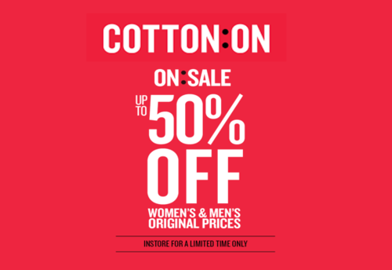

Cotton On Group is known for its fashion clothing and stationery brands. As of 2020, it has over 1,500 stores in 18 countries employing 22,000 people across seven brands: Cotton On, Cotton On Kids, Cotton On Body, Factorie, Typo, Rubi, Supré, and Cotton On Foundation.
The design team in the company's Australian office, control the steps of production from merchandise planning to establishing specifications, and production is outsourced to approximately 850 suppliers and factories globally. Cotton On Group sources its materials and products from a number of locations worldwide with the majority of its suppliers being located in China, Bangladesh, India and Australia. It also works with suppliers in Sri Lanka, Hong Kong, the United States and other parts of Asia. These facilities are used for horizontal division of labor, rather than being integrated.

50% SALE
Buy select items of clothing for 50% off!
Valid till March 2022
